Создание трендов с использованием архивов, формул и скриптов
Работа с архивами
Архивы содержат исторические данные измерений, которые могут быть использованы для построения графиков. Архивы можно объединять в формулы или линии для последующего анализа.
Применение: Это позволяет визуализировать историю изменения данных на графике и анализировать прошлые значения параметров системы.
Как использовать: Выберите необходимые архивы и отобразите их на графике в виде линий.
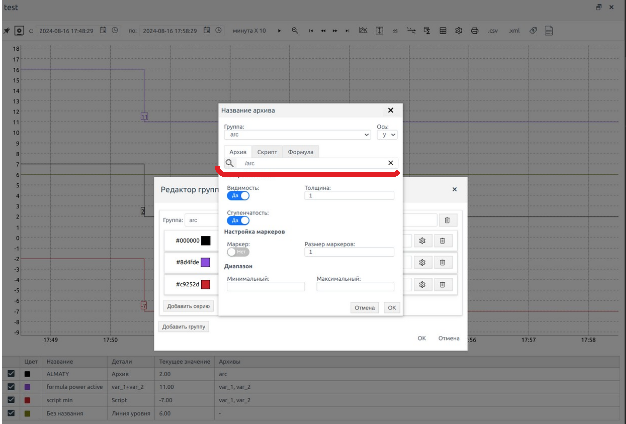
Рисунок 5.
Использование формул в трендах
Формулы, основанные на функциях Excel, дают возможность пользователю выполнять автоматические расчеты над данными. Это важно для выполнения сложных математических операций непосредственно в тренде.
Применение: Для расчета новых значений на основе существующих данных архивов.
Как использовать: Выберите нужные архивы, примените к ним формулы через редактор групп и сохраните изменения.
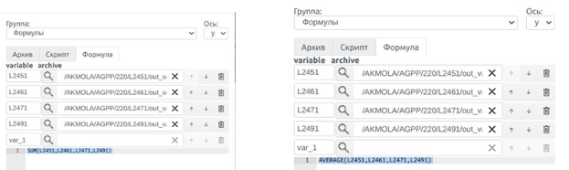
Использование скриптов для анализа данных
Скрипты на языке JavaScript позволяют проводить сложные вычисления и манипуляции с данными архивов, которые невозможно реализовать стандартными формулами.
Применение: Для написания кастомных расчетов и сложных алгоритмов на основе данных архивов.
Как использовать: В редакторе групп выберите архивы, затем напишите и скомпилируйте скрипт для нужных расчетов.
Настройки трендов
Изменение цвета и толщины линий
Настройка цвета и толщины линий позволяет лучше визуализировать различные параметры на графике, делая его более читабельным и удобным для анализа.
Применение: Полезно при работе с несколькими архивами одновременно.
Как использовать: В таблице параметров измените цвет и толщину линий для выделения важной информации.
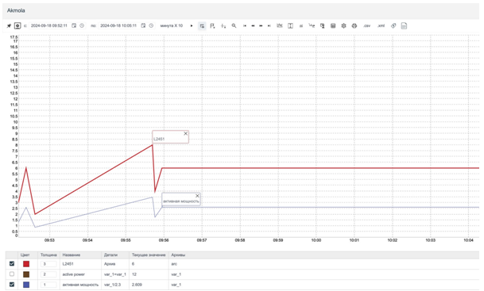
Рисунок 6.
Настройка диапазона значений
Позволяет задавать минимальные и максимальные значения для данных, что помогает сосредоточить внимание на важных отклонениях.
Применение: Для отслеживания параметров, которые выходят за установленные пределы.
Как использовать: В редакторе серий задайте пределы значений для отображаемых данных.
Рисунок 7.
Количество знаков после запятой
Настройка количества знаков после запятой важна для точного отображения данных на графике, особенно при работе с параметрами, требующими высокой точности.
Применение: Для отображения результатов с необходимой точностью.
Как использовать: В настройках отображения укажите количество знаков после запятой для архивов.
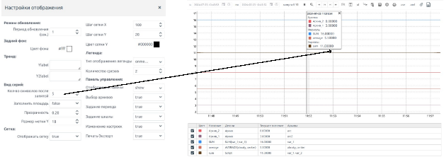
Рисунок 8.
Работа с выносками и аннотациями
Добавление и управление выносками
Выноски — это маркеры на графике, которые выделяют важные точки данных. Они позволяют лучше ориентироваться в данных и фиксировать ключевые моменты.
Применение: Для выделения экстремальных значений, резких изменений или других важных событий.
Как использовать: Для добавления выноски зажмите клавишу Alt и кликните по графику.
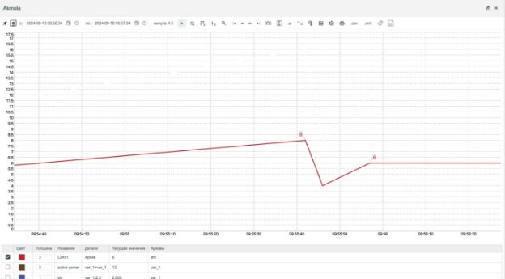
Рисунок 9.
Добавление аннотаций
Аннотации позволяют добавлять текстовые метки на график, что помогает лучше объяснять или комментировать данные для других пользователей или при анализе.
Применение: Для пояснения ключевых изменений или добавления примечаний к данным.
Как использовать: Нажмите на маркер линии и введите текст аннотации.
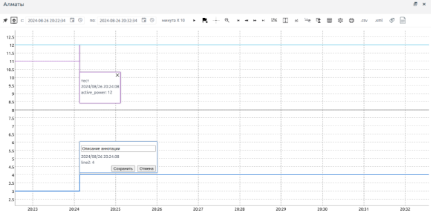
Рисунок 10.
Поиск и копирование архивов из мнемосхемы в тренд
Применение: Для упрощения** работы с историческими данными и поддержки процесса их анализа для улучшения оперативного контроля и принятия решений.
Как использовать: В интерфейсе мнемосхемы, при клике на необходимый элемент, система позволяет скопировать путь до архива. Это действие автоматически сохраняет путь, который можно использовать в дальнейшем.
Чтобы найти нужный архив нужно нажать на значок лупы в окне Название архива:
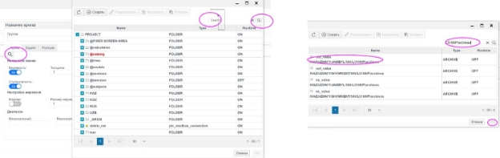
Для копирования тренда или архива необходимо нажать комбинацию клавиш Ctrl + C.
Далее, скопированный путь вставляется в поле поиска, где можно добавить архив для дальнейших манипуляций, таких как отображение данных в тренде.
Рисунок 11.
Привязка тренда к структуре проекта
Применение: Привязка тренда к структуре проекта позволяет интегрировать данные о работе системы в единый графический интерфейс, что упрощает мониторинг и контроль за ключевыми параметрами объекта. Это полезно для анализа работы оборудования и его оперативного состояния, например, для отслеживания перетоков энергии, динамических характеристик оборудования, аварийных и предаварийных ситуаций. Таким образом, тренды позволяют визуализировать текущее и историческое состояние системы, что способствует более эффективному принятию решений на основе фактических данных.
Как использовать: Привязка тренда к структуре проекта осуществляется через систему тегов и мнемосхем. Для этого нужно выполнить несколько шагов:
1\. Создание тегов для привязки:
Для привязки тренда к структуре проекта необходимо создать теги, которые будут содержать данные о контролируемых точках (например, параметры оборудования). Эти теги объединяются в группы и подгруппы, что формирует логическую структуру проекта.
В редакторе тегов задаются значения, которые будут отображаться в тренде (например, текущие значения параметров, предельные значения и т.д.).
2\. Привязка свойств тренда к тегам:
Для тренда нужно задать привязку его свойств к тегам, чтобы тренд отображал данные с нужных точек системы. Это можно сделать через панель свойств элементов мнемосхемы, где привязка может выполняться: прямой привязкой (непосредственно к тэгу) или привязкой через скрипт (например, для более сложных вычислений и динамических изменений значений).
3\. Привязка событий и реакций:
Для каждого тренда можно задать реакции на изменения в тегах, используя скрипты. Это позволяет динамически изменять отображаемую информацию в тренде в зависимости от состояния тега или изменения его значений.
4\. Использование групп тегов:
Для упрощения работы с большим количеством трендов и данных, можно использовать группы тегов. Это позволяет объединить несколько связанных точек управления и параметров, и одновременно привязать их к одному или нескольким трендам.
Таким образом, привязка тренда к структуре проекта происходит через создание и конфигурирование тегов, настройку привязок в свойствах тренда и, при необходимости, использование скриптов для более сложных операций.
Остальные функции
Группировка архивов
Архивы могут быть сгруппированы по различным признакам для упрощения работы с большими объемами данных. Это помогает пользователю лучше структурировать информацию.
Применение: Для упорядочивания архивов по категориям и облегчения работы с большими наборами данных.
Как использовать: Добавьте новую группу через редактор групп и объедините нужные архивы.
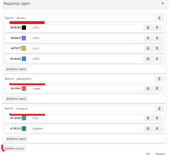
Сравнение данных в разных временных интервалах
Функция позволяет сравнивать текущие значения с данными, полученными ранее, что помогает выявить изменения и анализировать тренды.
Применение: Для анализа тенденций и изменений параметров во времени.
Как использовать: Выберите необходимый временной интервал и нажмите кнопку для сравнения.
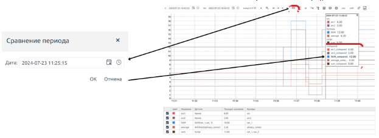
Рисунок 12.
Скрытие архивов
Функция позволяет временно скрывать ненужные архивы, чтобы сосредоточиться на важной информации на графике.
Применение: Полезно при работе с перегруженным графиком, где отображается много архивов.
Как использовать: Нажмите на цветную пиктограмму для скрытия архива.
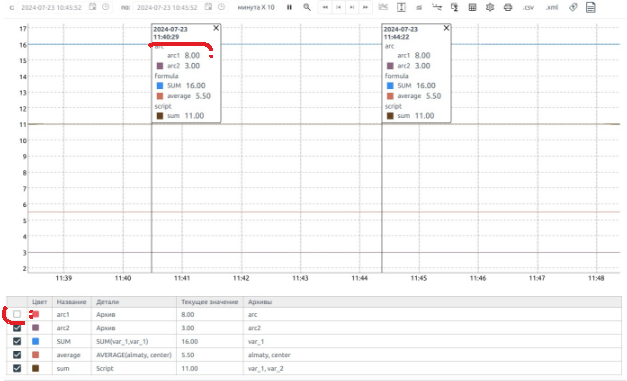
Рисунок 13.
Экспорт и печать данных
Выгрузка данных в различные форматы
Инструмент позволяет выгружать данные трендов в различные форматы (Excel, CSV, XML) для дальнейшего анализа или использования в других системах.
Применение: Для передачи данных другим пользователям или системам.
Как использовать: В меню экспорта выберите формат для выгрузки данных.
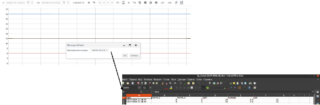
Рисунок 14.
Печать трендов
Графики можно распечатывать напрямую из системы без предварительного экспорта, что упрощает создание отчетов.
Применение: Для создания печатных отчетов с графиками.
Как использовать: Нажмите кнопку печати и настройте параметры вывода.